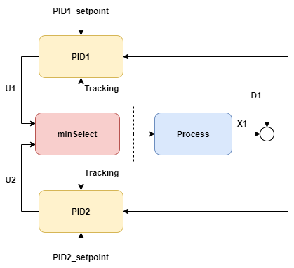

min/max select and tracking
Note
Work-in-progress, this article is currently a stub. Tracking signals need to be added, the treatment of tracking signals inside pidcontroller.cs needs to be reviewed, and the how to initialize a system that included select-blocks need to be reviewed.
This example considers two controllers who take turns controlling a process through a min-select.
PID1 is the controller which is normally active, while PID2 is a more aggressive controller that
takes over to more aggressively steer the process.
This type of configuration is reminiscent of how inlet separator levels may be controlled:
- one controller is active during "typical" operation with a low gain to let the level fluctuate and exploit the buffer capacity of the tank
- another controller is need to take over in case that a very large inlet disturbance (a "slug" of liquid) to avoid filling the tank completely.
The two controllers in this kind of configuration have different setpoints, different integral times and different gains.
The output Y could for instance be the level in the tank, and the input U could be the opening of the gas outlet, one strategy to avoid liquid carryover could be to have this valve close more if a slug arrives.
.
var processParameters = new UnitParameters
{
TimeConstant_s = 10,
LinearGains = new double[] { 1 },
U0 = new double[] { 50 },
TimeDelay_s = 5,
Bias = 50,
Y_min =0,
Y_max =100
};
var pidParameters1 = new PidParameters()
{
Kp = 0.5, //low-gain
Ti_s = 250 // slow control (use buffer capacity, use less valve action)
};
//
var pidParameters2 = new PidParameters()
{
Kp = 2,//high-gain
Ti_s = 15 // faster control(avoid carryover, aggressivley use valve when needed)
};
var process
= new UnitModel(processParameters, "Process");
var pid1 = new PidModel(pidParameters1, "PID1");
var pid2 = new PidModel(pidParameters2, "PID2");
var minSelect = new Select(SelectType.MIN,"minSelect");
var sim = new PlantSimulator(
new List<ISimulatableModel> { process, pid1, pid2,minSelect });
// tracking and min select-related
sim.ConnectModels(process, pid1);
sim.ConnectModels(process, pid2);
sim.ConnectModels(pid1, minSelect,0);
sim.ConnectModels(pid2, minSelect,1);
string selectSignalID = sim.ConnectModels(minSelect, process);
sim.ConnectSignalToInput(selectSignalID,pid1,(int)PidModelInputsIdx.Tracking);
sim.ConnectSignalToInput(selectSignalID,pid2,(int)PidModelInputsIdx.Tracking);
var inputData = new TimeSeriesDataSet();
inputData.Add(sim.AddExternalSignal(pid1, SignalType.Setpoint_Yset), TimeSeriesCreator.Constant(50, N));
inputData.Add(sim.AddExternalSignal(pid2, SignalType.Setpoint_Yset), TimeSeriesCreator.Constant(70, N));
inputData.Add(sim.AddExternalSignal(process, SignalType.Disturbance_D),
new Vec().Add(TimeSeriesCreator.Sinus(5,50,timeBase_s,N),
TimeSeriesCreator.TwoSteps(N*2/8,N*3/8,N,0,80,0))
);
inputData.CreateTimestamps(timeBase_s);
var isOK = sim.Simulate(inputData, out var simResult);
Plot.FromList(new List<double[]>
{
simResult.GetValues(process.GetID(),SignalType.Output_Y),
Vec<double>.Fill(85,N),
inputData.GetValues(pid1.GetID(),SignalType.Setpoint_Yset),
inputData.GetValues(pid2.GetID(),SignalType.Setpoint_Yset),
simResult.GetValues(pid1.GetID(),SignalType.PID_U),
simResult.GetValues(pid2.GetID(),SignalType.PID_U),
simResult.GetValues(minSelect.GetID(),SignalType.SelectorOut),
},
new List<string> { "y1=y1","y1=yHH", "y1=y1_set", "y1=y2_set",
"y3=u_pid1", "y3=u_pid2","y3=u_select" }, timeBase_s, "MinSelectEx");